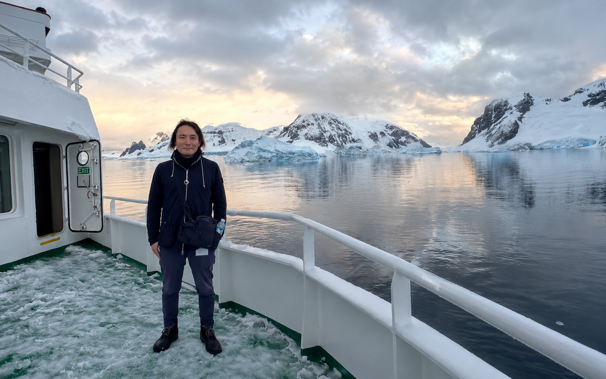

Tatsuo Fukuda
Official Diving Site
Scroll
01Statement
02Gallery
03Journal
04Biography

Official Diving Site
光が届かない場所にも、確かに色がある。
私はその色を、息を止めて聴きにいく。
水の中では、時間の流れ方が変わる。潮に身をあずけ、生きものの呼吸に近づいていくと、陸の上で見失っていた静けさがそこにある。この一連の作品は、遠い海ではなく、私たちのすぐそばにある海を、もう一度見つめ直すための記録です。
被写体にできるだけ負担をかけず、その場のリズムに寄り添うこと。派手さよりも、そこにある気配を残すこと。撮るたびに、海は私に問いを返してきます。あなたは何を持ち帰るのか、と。
Fukuda Tatsuo — Diver & Photographer
Fukuda Tatsuo
Diver / Underwater Photographer
1990年生まれ。学生時代に沖縄で初めて潜って以来、国内外の海に通いつづける。生きものと環境のあいだにある関係を主題に、静かな光と余白のある水中写真を撮影。近年は身近な海の記録に力を入れている。（※プロフィールは仮のサンプルです）
海のこと、撮影のご依頼、
ひとことでもお気軽に。
撮影・寄稿・使用許諾などのお問い合わせは、以下のフォームまたはメールからどうぞ。（※フォームはデモです）